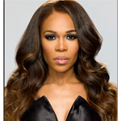

| Home | Destiny's Child | Sasha Fierce | Mrs. Carter |
|
|||
|
DestinysChild
|
Michelle Williams Tenitra Michelle Williams (born July 23, 1980), commonly known as Michelle Williams, is an American recording artist and songwriter. Williams rose to fame in the 2000s as a member of R&B girl group Destiny's Child, one of the best-selling female groups of all time with over 60 million records, of which more than 35 million copies sold with the trio lineup with Williams. During their hiatus, she released her debut solo album Heart to Yours (2002) which topped the US gospel album chart and became the best-selling gospel release of the year. Also in 2002, Billboard, named her the fifth Top Gospel Artist of the year and she received a MOBO Award for "Best Gospel Act" ] Following this she released Do You Know (2004) which gained her a nomination for "Best Gospel Act" at the 2004 MOBO Awards. After Destiny's Child's disbanded in 2005, Williams released her first pop album, Unexpected (2008),[4] which spawned the internationally-charting single "We Break the Dawn" and the US Dance number-one "The Greatest". Her fourth studio album, Journey to Freedom (2014) was critically acclaimed and became her highest-charting charting album in the US; preceded by lead single "If We Had Your Eyes" which reached the US Adult R&B top 20 and the Soul Train-nominated "Say Yes", which charted internationally and topped the US Hot Gospel Songs chart for 7 weeks. Journey to Freedom was nominated for Outstanding Gospel Album (Traditional or Contemporary) at the 46th NAACP Image Awards and earned Williams four nominations at the 30th annual Stellar Awards, winning Music Video of the Year for "Say Yes".[5][6][7] In 2015, Williams sang for US President Obama & First Lady Michelle Obama at The White House.[8] Furthermore, Williams found success as a television, Broadway and West End theatre actress, gaining a nomination for "Best Lead Female – Equity" in 2008 at the 18th Annual NAACP Theatre Awards.[9] Making her acting debut on Broadway in Aida (2003), she has since starred in the sitcom series Half & Half (2006) and the musical productions; The Color Purple (2007), Chicago (2009-2010), What My Husband Doesn't Know (2011) and Fela! (2013). Furthermore, she was a featured judge on MTV's Top Pop Group, a contestant in series 8 of Strictly Come Dancing and co-stars alongside Deitrick Haddon in the Oxygen reality television series Fix My Choir. She has earned several awards and accolades including but not limited to, a Grammy Award and star on the Hollywood Walk of Fame with Destiny's Child; a solo MOBO Award and Stellar Award. |